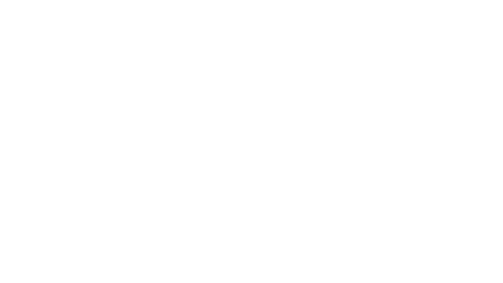

19
ZIFEIYU PPT SKILL · MEDIA SAMPLE
SHEET 01/06
MEDIA · 视频与声音版式
REGISTRY L17–L19 · POSTER LOCKED · OFL MEDIA
DRAWN BY
zifeiyu · claude
DATE
2026-08
REVISION
V4 · MEDIA
进入本页自动静音播放，点击画面暂停 · 素材：ffmpeg 渐变生成 · 无版权
FIG. V-2 · INSET VIDEO
SHEET 03/06
当视频承担论据而非氛围时，用半幅版式让讲解文字与画面同屏。视频默认静止在封面帧，演示时点击播放；导出 PPTX 后画面帧原样嵌入，接收方双击即可播放。
点击画面播放 · 素材：ffmpeg 渐变生成
FIG. A-1 · AUDIO TRACK
SHEET 04/06
▶
0:08 · ffmpeg sine 220/330/440 Hz 混合 · 无版权
0:00 / 0:08
适用于播客节选、音乐作品与访谈片段。播放键与进度线由演示层驱动；导出 PPTX 时音频以图标嵌入播放键位置，双击即可播放。时长与来源必须标注真实值。
FIG. M-1 · MIRRORED
SHEET 05/06
is-left / is-right 修饰类 · 图左文右
在 l14-img / l14-caption 上加 is-left、在 l14-body 上加 is-right，即可得到图左文右的镜像构图。连续多页图文时左右交替，阅读节奏不再单调。L18 视频半幅同样支持这组修饰类。
CLOSING
SHEET 06/06
L17 视频主视觉 · L18 视频半幅 · L19 音频页 · L14/L18 镜像变体——媒体与版式同一契约：本地文件、锁定封面帧、确定性导出。
zifeiyu-ppt-skill · 媒体金样 · 2026-08